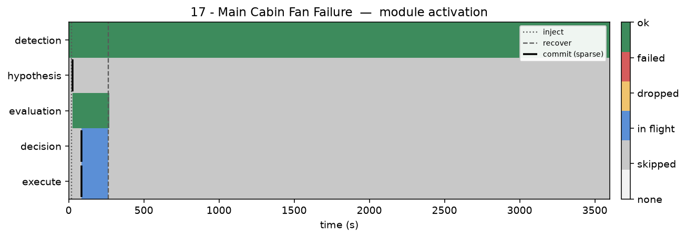
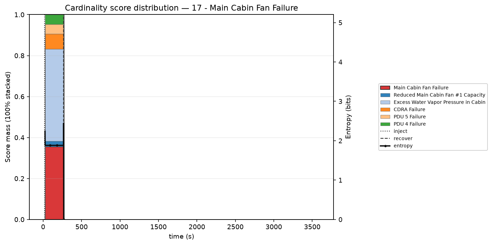

Module activation



| Hypothesis | P | T | P/T |
|---|---|---|---|
| 1. Main Cabin Fan Failure ★ ▸ | 0.356 | 3 | 0.1186 |
| 2. Excess Water Vapor Pressure in Cabin | 0.450 | 15 | 0.0300 |
| 3. PDU 4 Failure | 0.047 | 6 | 0.0078 |
| 4. PDU 5 Failure | 0.047 | 6 | 0.0078 |
| 5. Reduced Main Cabin Fan #1 Capacity | 0.027 | 4 | 0.0067 |
| 6. CDRA Failure | 0.074 | 15 | 0.0049 |
| 7. TCCS Auxiliary Fan at Reduced Capacity | 0.000 | 4 | 0.0000 |
| 8. Emergency O2 System Maintenance | 0.000 | 8 | 0.0000 |
| 9. Fuel Cell Degrade | 0.000 | 8 | 0.0000 |
| 10. Fuel Cell Failure | 0.000 | 8 | 0.0000 |
| 11. CDRA LiOH Canister Saturation | 0.000 | 12 | 0.0000 |
| 12. Loss of Pressure | 0.000 | 12 | 0.0000 |
| 13. MOXIE Antenna Failure | 0.000 | 12 | 0.0000 |
| 14. MOXIE ECM Failure | 0.000 | 12 | 0.0000 |
| 15. MOXIE Fan Failure | 0.000 | 12 | 0.0000 |
15 of 31 · ★ truth · ▸ attempted · highlight = first pick · P=0 if unscored at first decision
Sequence: Main Cabin Fan Failure
TTR: 4.1 min · attempts 1 · wrong 0